y，x=y，容易发现它们是递归的；从这些概念出发，我们现在定义一系列的函数（和关系）1-45，它们中的每一个都由此系列前面的那些，通过在命题Ⅰ-Ⅳ中提到的运算来定义．一般说来，这个过程将命题Ⅰ-Ⅳ所允许的定义步骤汇拢了一起．包含了，例如，诸如“公式”，“公理”，以及“直接推论”这些概念的1-45中的每一个函数（关系）因而都是递归的．
y，x=y，容易发现它们是递归的；从这些概念出发，我们现在定义一系列的函数（和关系）1-45，它们中的每一个都由此系列前面的那些，通过在命题Ⅰ-Ⅳ中提到的运算来定义．一般说来，这个过程将命题Ⅰ-Ⅳ所允许的定义步骤汇拢了一起．包含了，例如，诸如“公式”，“公理”，以及“直接推论”这些概念的1-45中的每一个函数（关系）因而都是递归的．众所周知，由于数学朝着更高精确性方面的发展，促成了对它大范围地形式化，从而使证明可以仅依据几个机械的规则来进行，一方面有业已建立的最广泛的数学基本原理（Principia Mathematica，记为（PM））[2]的形式体系，以及另一方面的策梅洛-弗兰克尔（Zemelo-Frankel）的集合论公理体系［后来，被冯·诺伊曼（J.v．Neumann）推广］．[3]这两个体系是如此之广泛，以至于当今的数学中所使用的所有证明方法都在它们中被形式化了，就是说被归结到了几个公理和几个推理规则上了．因此人们或许会推测说，这些公理和规则足以决定所有那些完全可以在所涉及体系中按任意一种方式形式表达的数学问题，我们下面将证明，情况并非如此，事实上就在前面所提及的这两个体系中便有在通常整数理论里相对简单的问题，它不能由这些公理判定．[4]而出现这种情形也并非由于以某种方式能归结到所建体系的特殊性质，而是对于非常广泛的一类形式体系都成立，特别地，包括了所有那些由对所提及的这两个体系添加了有限个公理所产生的体系[5]，但这时还需假定这种添加不会因此而出现在脚注［4］中所描述的那种命题，尽管它是假的却成为可证明的．
在进行详细讨论之前，我们首先简要说明证明的主要思路，自然并不自以为是完全准确的．在这里我们只局限于PM体系；一个形式体系的公式从外部看，是些基本符号（变量，逻辑常量以及括号或分号）的有限序列，并且可以容易地而完全准确地说出哪些基本符号序列是有意义的而哪些不是[6]从形式的观点看，所谓证明也不过是公式（带有明确特征）的有限序列．对于元数学的目标而言，将什么对象取作基本符号自然不是本质性的，而我们则建议对它们使用自然数[7]．于是，一个公式因而是自然数的一个有限序列[8]，从而一个证明模式（proof-schema）是自然数的有限序列的一个有限序列．数学概念和命题因而成为关于自然数或者它们的序列的概念和命题[9]，因此至少部分地可用PM体系自身的符号来表达．特别地，可以证明“公式”，“证明模式”，“可证明的公式”的概念在PM体系中是可定义的，即可以给出[10]PM的一个，例如，具一个变量v的（数序列形式的）公式F（v），使得F（v）（根据内包赋予解释）陈述的是：v是个可证明的公式．我们现在按以下方式得到PM体系的一个不可判定的命题，即一个命题A，对它既不是A也不是非A是可以证明的：
我们将给PM的一个只具自由变量的公式，以及自然数类型的公式（类的类）指派一个组符号（class-sign）．我们把这些组符号想成己按某种方式安排成了序列[11]，并且以R（n）表示它的第n个组符号；并且我们注意到，“组符号”的概念同样还有有序关系R都在PM体系中可定义，设α为任一组符号；我们以［α；n］指定为那个由将组符号a中的自由变量置换成对于自然数n的符号而导出的公式．三项关系x=［y；z］也证明在PM中是可定义的，我们现在定义一个自然数的类K如下：
n∈K≡Bew［R（n）；n］[12]， （1）
其中Bew x的意思是：x是一个可证明的公式．因为出现在此定义中的概念都是在PM中可定义的，故由它们构成的概念K也是可定义的，即有一个组符号S[13]，使得公式［S；n］（根据内包赋予解释）陈述的是：自然数n属于K．作为一个组符号的S等同于一个确定的R（q），即
S=R（q）
对某个确定的自然数q成立，我们现在要证明命题［R（q）；q］[14]是在PM中不可判定的．因为如果假定命题［R（q）；q］是可证明的，那么它也就会是正确的了；但是像已说过的那样，那就意味着q便会属于K，即根据（1），Bew［R（q）；q］就会成立，这与我们的假设相矛盾，反之，如果［R（q）；q］的否定是可证明的，于是n∈K，即Bew［R（q）；q］就会成立．因此［R（q）；q］像它的否定一样也是可证明的了，这仍然是不可能的．
这个结果与理查德悖论（Richard’s Paradox）的相似性立刻显现出来．这也与“说谎者”悖论[15]紧密相关，这是因为不可判定命题［R（q）；q］准确陈述的是，q属于K，即根据（1），［R（q）；q］是不可证明的．因此我们直面了一个断言它自己的不可证明性的命题[16]．刚才显示的证明方法明显可用于每一个具有下述特征的形式体系：首先按内包进行解释，并具有用来定义出现在上面论证中概念（特别是“可证明公式”的概念）的充足的表达手段；其次，它中间的每个可证明公式就其内包而言是正确的．现在将要给出对上述证明的准确陈述中有一项任务，即要将这些假定条件的第二个替换成一个纯粹形式的而且很弱的条件．
由［R（q）；q］是断言它自己的不可证明性的解释，可立即推导出［R（q）；q］的正确性，这是因为［R（q）；q］确实是不可证明的（因为是不可判定的）．所以在PM体系中不可判定的命题原来竟是由元数学的思考所决定，对这个不平凡的事实的仔细分析引出了有关形式体系相容性证明的令人吃惊的结果，对此我们将在第4节（命题XI）中详细处理．
我们现在将前面所概述的证明严格地展开，并以给出形式体系P的精确描述为起点，而这个体系是我们用来证明不可判定命题的存在性的．P本质上是由在佩亚诺公理上添加PM的逻辑公理[17]（作为个体的数，作为非定义基本概念的后继关系）得到的．
体系P的基本符号如下：
Ⅰ．常量：“～”（非）．“∨”（或），“∏”（对所有的），“0”（零），“f”（…的后继元），“（”，“）”（括号）．
Ⅱ．第一型变量（对于个体，即包括0的自然数）“x1”，“y1”，“z1”，…，
第二型变量（对于个体的类）“x2”，“y2”，“z2”，…，
第三型变量（对于个体的类的类）“x3”，“y3”，“z3”，…，
等等对于所有自然数为型的变量[18]．
注：将2项和多项函数（关系）变量作为基本符号是不必要的，这是因为关系式可以定义为有序偶的类，而有序偶又可以作为类的类，譬如，a，b的有序偶对（（a），（a，b）），其中（x，y）表明是仅具元素x和y的类，而（x）表示是仅具元素x的类．[19]
我们将第一型符号（sign of first type）理解为形如
a，fa，ffa，fffa，…
的符号的一个组合，其中的a或是0或是一个第一型变量．在前一种情形我们称这样一个符号为一个数符号（number-sign）．对于n
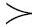
1，我们对于一个第n型符号（sign of n-th type）理解为与第n型变量（variable of n-th type）一样的意思．称形如a（b）的符号的组合为初等公式（elementary formulae），其中的b是一个第n型符号，而a是个第（n+1）型符号，定义公式（formulae）的类为包含下面符号的最小类[20]：～（a），（a）∨（b），x∏（a）（其中x是任何一个已给变量[21]）a．我们称（a）∨（b）为a和b的析取（disjunction），～（a）为否定（negation），以及x∏（a）为a的一个推广（generalization）．称一个没有自由变量的公式为一个命题公式（propositional formulae）（自由变量（free variable）以通常方式定义）．称一个正好具有n个自由个体变量的公式（否则便没有自由变量）为一个n位关系符号（n-place relation-sign）而对于n=1也叫做一个组符号（class-sign）．对于Subst
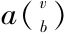
（其中a代表一个公式v为一个变量，而b是一个与v有同一类型的符号）我们理解为由a推导出的公式，它的意思是指，当在a中一旦v为自由时便将v置换为b[22]．我们称一个公式a是另一个公式b的一个型提升（type-lift）是指，如果当我们增加出现在b中所有变量型总和时，a是由b推导出的．以下的公式（Ⅰ-Ⅴ）被称做公理（它们是借助于一些习惯上定义的简略记号建立的：.，⊃，≡，（Ex）＝，[23]并且遵从于关于括号省略的约定）[24]：
Ⅰ．
1.~（fx1=0）．
2.fx1=fy1⊃x1=y1．
3.x2（0）·x1∏（x2（x1）⊃x2（fx1））⊃x1∏（x2（x1））.
Ⅱ．每一个由下列格经由关于p，q及r公式的替换导出的公式．
1.p∨p⊃p.
2.p⊃p∨q.
3.p∨q⊃q∨p．
4.（p⊃q）⊃（r∨p⊃r∨q）.
Ⅲ．由两个格
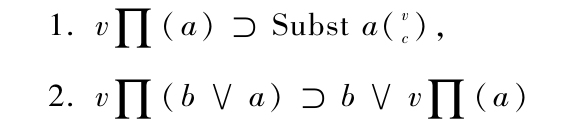
经由对于a，v，b，c的如下替换（且在1．中施行记作“Subst”的运算）得到的每个公式：对a以任意已知公式替换，对b以其中v不是自由变量的任意公式替换，对c以一个与v同类型的符号替换，但假定c不含有在a中v为自由位置的是约束的变量[25]．
Ⅳ．由模式
1．（Eu）（v∏（u（v）≡a））
经以下替换导出的每个公式：将v或u分别替换为第n型或第n+1型的任意变量，将a替换为不含有作为自由变量的u的公式．这个公理代表了可约性公理（集合论的概括公理）．
Ⅴ．由
1．x1∏（x2（x1）≡y2（x1））⊃x2=y2
经型提升（以及该公式自己）推导出的每个公式．这个公理陈述的是，一个类完全由它的元素决定．
称一个公式c是a和b的一个直接推论是说，如果a是公式（～（b））∨（c）；是a的一个直接推论是说，如果c是公式v∏（a），其中v代表任意变量．定义可证明公式的类为包含这些公理，并对于“为……直接推论”这个关系的最小的公式类[26]．
体系P的基本符号现在一一对应于自然数，将其列于下：
“0”…1 “∨”…7 “（”…11
“f”…3 “∏”…9 “）”…13
“~”…5
另外，n型变量被给予形如pn的数（p是一个13的素数）．在这里，对于每一个基本符号的有限序列（还有对于每个公式）存在到自然数的有限序列的1-1对应，我们现在将这些自然数的有限序列映射到自然数（还是以1-1对应的方式），这个映射将数2n1．3n2…pnk对应于n1，n2，…，nk，其中pk是按大小排列的第k个素数，因此一个自然数以一一的方式不仅被指派给了基本符号而且也指派给了每一个这些符号的有限序列．我们以Φ（a）表示对应于其本符号或基本符号的序列a的那个数．现假定我们有了一个基本符号或它们的序列的类或关系R（a1，a2，…，an）．我们指派给它以一个自然数的类（关系）R′（x1，x2，…，xn），使它对于x1，x2，…，xn成立当且仅当存在a1，a2，…，an使得xi=Φ（ai）（i=1，2，…，n）且R（ai，a2，…，an）成立．我们以同一些字的黑体表示业已以这种方式指派给那些前面定义过的诸如“变量”，“公式”，“命题公式”，“公理”，“可证明公式”，等数学概念的自然数的类和关系，“在体系P中有不可判定问题”这个命题因而可按如下读作：存在命题公式a使得既非a也非a的否定是可证明公式.
我们现在引进一个与形式体系没有直接关系的插入性的考虑，并首先给出下面的定义：称一个数论函数[27]φ（x1，x2，…，xn）是由数论函数ψ（x1，x2，…，xn-1）和数论函数μ（x1，x2，…，xn+1）递归定义的（recursively defined）是说，如果对所有的x2，…，xn，k[28]成立如下的关系：
φ（0，x2，…，xn）＝ψ（x2，…，xn），
φ（k+1，x2，…，xn）=μ（k，φ（k，x2，…，xn），x2，…，xn）. （2）
称一个数论函数φ为递归的是说，存在一个数论函数的有限序列φ1，φ2，…，φn，它以φ为尾项并具有性质：序列中每个φk或者由其前面中的两项递归地定义，或者由前面中的某项经替换导出[29]，或者最后的情形：一个常值或后继元函数x+1．称属于一个递归函数φ的最短序列φi的长度为它的次．称自然数之间的一个关系式为递归的[30]是说，存在一个递归函数φ（x1，…，xn）使得对于所有的x1，x2，…，xn有
R（x1，…，xn）～［φ（x1，…，xn）=0］.[31]
以下命题成立：
Ⅰ 由递归函数（或关系）经由在变量位置的递归函数的替换导出的每个函数（或者关系）是递归的，同样由递归函数经递归函数按照模式（2）推导出的每个函数也是递归的．
Ⅱ.如果R和S为递归关系，则R，R∨S（从而R＆S）也是．
Ⅲ.如果函数φ（X）和ψ（y）是递归的，则关系φ（X）=ψ（y）也是．[32]
Ⅳ.如果函数φ（X）和关系R（X，y）为递归的，则下面的关系也是：
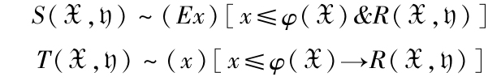
并且同样地，函数ψ
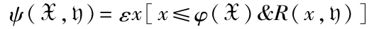
也是．其中εxF（x）表示：当F（x）成立时为使其成立的最小的x，如果没有这样的数则为0．
命题Ⅰ立即由“递归”的定义得出，命题Ⅱ和Ⅲ则基于一个容易确定的事实．对应逻辑概念，-，∨，=的数论函数
α（x），β（x，y），γ（x，y），
即
α（0）=1；α（x）=0对于n≠0
β（0，x）=β（x，0）=0；β（x，y）=1，如果x，y全≠0
γ（x，y）=0，如果x=y；γ（x，y）=1，如果x≠0
是递归的，命题Ⅳ的证明可简述于后：根据假定，存在一个递归ρ（x，y）使得
R（x，y）～［ρ（x，y）=0］．
我们现在根据递归模式（2）以如下方式定义一个函数χ（x，y）：
χ（0，y）=0，
χ（n+1，η）=（n+1）·a+χ（n，η）·α（a）[33]，
其中a=α［α（ρ（0，η）］·α［χ（n，η）］．
因此，χ（n+1，η）或者=n+1（如果a=1）或者=χ（n，η）（如果a=0）[34]．显然，出现第一种情形当且仅当a的所有构成因子为1，即如果
R（0，η）＆R（n+1，η）＆［χ（n，η）=0］．
由此得出函数χ（n，η）（看成是n的函数）一直到是R（n，η）成立的最小n前保持为0，而后则等于这个值（如果R（0，η）已经是这种情形了，那么对应的χ（x，η）为常数并=0）．因此，
ψ（χ，η）=χ（φ（χ），η），
S（χ，η）～R［ψ（χ，η），η］．
关系T通过否定可化成类似于S情形，故而命题Ⅳ得证．
对于函数x+y，x，y，xy，还有关系xy，x=y，容易发现它们是递归的；从这些概念出发，我们现在定义一系列的函数（和关系）1-45，它们中的每一个都由此系列前面的那些，通过在命题Ⅰ-Ⅳ中提到的运算来定义．一般说来，这个过程将命题Ⅰ-Ⅳ所允许的定义步骤汇拢了一起．包含了，例如，诸如“公式”，“公理”，以及“直接推论”这些概念的1-45中的每一个函数（关系）因而都是递归的．
1.x/y≡（Ez）［z≤x＆x=y.z］[35]．
x被y除尽．[36]
2.Prim（x）≡（Ez）［z≤x＆z≠x＆x/z］＆x1．
x是个素数．
3.0Pr x≡0，
（n+1）Pr x≡εy［y≤x＆Prim（y）＆x/y＆y>nPrx］．
nPr x是包含在x中的（按大小排序）第n个素数．[37]
4.0！=1，
（n+1）！≡（n+1）．n！．
5．Pr（0）≡0，
Pr（n+1）≡εy［y≤{Pr（n）}！+1＆Prim（y）＆yPr（n）］．
Pr（n）是第n个素数（按大小排序）．
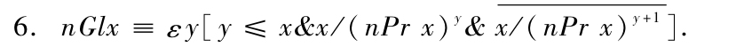
nGlx是指派绐数x的数序列的第n项（对于n>0且n不大于该序列的长）．
7.l（x）=εy［y≤x＆yPrx>0＆（y+1）Prx=0］．
l（x）是指派给x的序列的长．
8．x*y≡εz［≤［Pr{l（x）+l（y）}］x+y
＆（n）n≤l（x）→nGl z=nGl x］
＆（n）［0≤l（y）→{n+l（x）}Gf z=nGl y］
x*y对应于将两个数的有限序列“联合一起”的运算．
9．R（x）=2x．
R（x）对应于只由数x（对于x>0）组成的数序．
10.E（x）≡R（11）*x*R（13）．
E（x）对应于“括号运算”［11和13被指派给了基本符号“（”和“）”］．
11．nVarx≡（Ez）［13z≤x＆Prim（z）＆x=zn］＆n≠0．
x是个第n型变量．
12．Var（x）≡（En）［n≤x＆nVar x］．
x是个变量．
13．Neg（x）≡R（5）*E（x）．
Neg（x）是x的否定．
14．xDisy≡E（x）*R（7）*E（y）．
xDisy是x与y的析取．
15.xGeny≡R（x）*R（9）*（y）．
xCeny是y以变量x所做的推广（假定x是个变量）．
16.0Nx≡x，
（n+1）Nx≡R（3）*nNx．
nNx对应于符号f在x做“n重前缀”的运算．
17．Z（n）≡nN［R（1）］．
Z（n）是数n的数符号．
18.Typ′1（x）≡（Em，n）{m，n≤x＆［m=1 V 1Varm］
＆x=nN［R（m）］}[38]．
x是第1型符号．
19.Typn（x）≡［n=1＆Typ′1（x）］V［n>1＆（Ev）{v≤x＆nVar v＆x=R（v）}］．
x是第n型符号．
20.Elf（x）≡（Ey，z，n）［y，z，n≤x＆Typn（y）
＆Typn+1（z）＆x=z*E（y）］．
x是个初等公式．
21.Op（x，y，z）≡x=Neg（y）∨x=yDis z∨（Ev）v≤x
＆Var（v）＆x=vGeny］．
22.FR（x）≡（n）{0<n≤l（x）→Elf（nGl（x）∨（Ep，q）
［0<p，q<n＆Op（nGlx，pClx，qGlx）］}＆l（x）>0．
x是一个公式的序列，它中的每一个或者是个初等公式或者通过否定，析取以及推广有前面的那些公式f关系）产生．
23.Form（x）≡（En）{n≤（Pr［l（x）2］）x［l（x）］2＆FR（n）＆x=［l（n）］Gln}.[39]
x是一个公式（即n的公式序列的最后一项）．
24.vBebn，x≡Var（v）＆Form（x）＆（Ea，b，c）［a，b，c≤x
＆n=a*（vGen b}c＆Form（b）
l（a）+1≤n≤l（a）+l（vGen b）］．
变量v在x的第n位是约束的．
25.vFrn，z≡Var（v）＆Form（x）＆v=nhGl x
＆n≤l（x）＆vGebn，x．
变量v在x的第n位是自由的．
26．vFrx≡（En）［n≤l（x）＆vFrn，x］．
v在x中以自由变量出现．
27．Su x
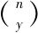
≡εz{z≤［Pr（l（x）+l（y））］x+y＆［（Eu，v）u，v≤x＆x=*R（nGlx）*v
＆z=u*y*v＆n=l（u）+1］｝．
Sux
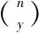
从x以y替换x的第n项进行推导（假设了0n≤l（x））．
28.0Stv，x≡εn{n≤l（x）＆vFrn，x＆（Ep）［n<p≤l（x）＆vFrp，x］}
（k+1）Stv，x≡εn{n<kStv，x＆vFrn，x＆（Ep）［n<p<kSt vx＆vFrp，x］}．
kStv，x是x中的第（k+1）位（从公式x的尾部数起），而在此位置，v在x中是自由的（如果没有这样的位置，则为0）．
29．A（v，x）≡εn{n≤l（x）＆nSt，v，x=0}．
A（v，x）是在x中v为自由的位置的个数．
30．Sbo
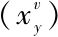
≡x，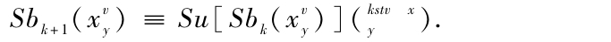
31.Sb≡
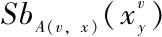
.[40]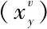
是上面所定义的概念Subst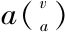
．[41]32.xlmpy≡［Neg（x）］lDisy，
xCony≡Neg{［Neg（x）lDis［Neg（y）］}，
xAeqy≡（xlmp y）Con（ylmpx），
vExy≡Neg{vGen［Neg（y）］}．
33.nThx≡εy{y≤xxn＆（k）［k≤l（x）→（kGl x≤13
＆kGly=kGlx）V（kGlx>13＆kCly=kGl x［1Pr（kGt x）］n）］}．
nThx是x的第n个型提升（如果x和nThx均为公式）．
对应于公理Ⅰ的1到3，有三个确定的数，我们将其记为z1，z2，z3，并定义：
34.Z-Ax（x）≡（x=z1∨x=z2∨x=z3）．
35．A1-Ax（x）≡（Ey）［y≤x＆Form（y）＆x=（yDis y）lmpy］．
x是一个公式，它由公理Ⅱ，1中的替换导出．类似地，A2-Ax，A3-Ax，A4-Ax按照公理Ⅱ的2到4定义．
36.A-Ax（x）≡A1-Ax（x）∨A2-Ax（x）∨A3-Ax（x）∨A4-Ax（x）．
x是一个公式，它由语句运算中一个公理的替换导出．
37.Q（z，y，v）≡（En，m，w）［n≤l（y）＆m≤l（z）＆w≤z
＆w=mGL x＆wGebn，y＆vFrn，y］．
z不包含在y中v为自由的位置上的约束变量．
38．L1-Ax（x）≡（Ev，y，z，n）{v，y，z，n≤x＆nVarv
＆Typn（z）＆Form（y）＆Q（z，y，v）
＆x=（vGeny）Imp［Sb
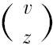
］}．x是一个公式，它由公理模式Ⅲ，1经替换导出．
39.L2-Ax（x）≡（Ev，q，p）{v，q，p≤x＆Var（v）
＆Form（p）＆vFrp＆Form（q）
＆x=［vGen（pDis q）］lmp［pDis（vGenq］）}．
x是一个公式，它由公理模式Ⅲ，2经替换导出．
40.R-Ax（x）≡（Eu，v，y，n）［u，v，y，n≤x＆nVarv
＆（n+1）Var u＆uFr y＆Form（y）
＆x=uEx{vGen［［R（u）*E（R（v））］Aeq可］}］．
x是一个公式，它由公理模式Ⅳ，1经替换导出．
对应于公理Ⅴ，1有一个确定的数z4，我们定义
41．M-Ax（x）≡（En）［≤x＆x=nTh z4］．
42.Ax（x）≡Z-Ax（x）∨A-Ax（x）∨L1-Ax（x）∨
L2-Ax（x）∨RAx（x）∨M-Ax（x）．
x是一个公理．
43．Fl（xyz）≡y=zImpz∨（Ev）［v≤x＆Var（v）＆x=vGen y］．
x是y和z的一个直接推论．
44.Bw（x）≡（n）{0n≤l（x）→Ax（nGf x）］}＆l（x）＞0．
x是个证明模式（一个公式的有限序列，它的每一项或者是个公理，或者是前两个的直接推论．
45．xBy≡Bw（x）＆［l（x）］Gl x=y．
x是公式y的一个证明．
46．Bew（x）=（Ey）yBx．
x是个可证明公式［Bew（x）是1-46这些概念中唯一不能断言为递归的一个概念．］
下面的命题是模糊阐述的事实“每个递推关系在体系P（按不同内包解释）是可定义的”的准确表达，而不管对于P的公式作了何种解释．
命题Ⅴ：对应于每个递归关系R（x1…xn）有一个n位的关系符号（relation-sign）r（具有自由变量[42]u1，u2，…，un）使得对于每个数的n元组（x1，…，xn）成立：
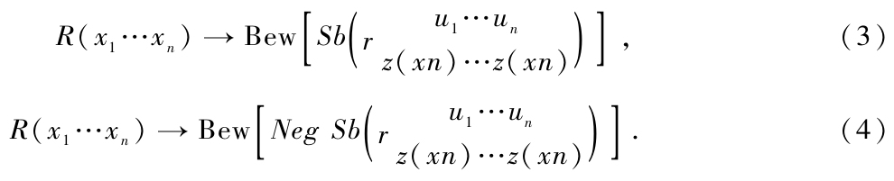
在这里我们只需给出该命题的证明概述就可以了，这是因为它并没有什么原则上的困难，只是有点繁杂而已．[43]我们对于所有具有形式x1=φ（x2，…，xn）的关系R（x1，…，xn）来证明此命题．[44]（其中φ为递归函数）并应用对于φ的次数的数学归纳法．对于一次的函数（即常数以及函数x+1）命题是平凡的．那么设φ为m次的．用替换运算或者递归的定义，它可从较低次的函数φ1，…，φn得出．由于归纳假定，每个对于φ1，…，φn已经证明了的事实，存在有相应的关系符号r1，…，rn使得（3）和（4）成立．从而从φ1，…，φn推导出φ的定义的过程（替换和递归定义）完全可以被形式地映入到体系P中，如果这样做了，那么我们便从r1，…，rn得到了一个新的关系符号r，[45]于是我们容易使用归纳假定讧明（3）和（4）对于它是成立的．称按照这种方式指派给一个递归关系[46]的一个关系符号r为递归的．
我们现在来谈我们这样做的目的：
设c为任一公式的类．以Flg（c）（c的推论的集合）表示包含了所有c的公式以及所有公理的，且对于关系“…的直接推论”是封闭的最小的公式的集合．称c是w相容的是说，如果没有组符号a使得
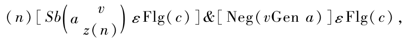
其中v是组符号a的自由变量．
每个w相容体系自然也是相容的．然而反过来则不如此，我们后面将证明它．
关于不可判定命题的存在性的一般结果可叙述如下：
命题Ⅵ 对于公式的每个w相容的递归类c对应有递归的组符号r，使得既不是vGenr也不是Neg（vGen r）属于Flg（c）（其中v是r的自由变量）．
证明 设c为任一的公式的递归ω相容类，我们定义
Bwc（x）≡（n）［n≤L（x）→Ax（nGlz）∨（nGlx）εc∨
（Ep，q）{0<p，q<n＆Fl（nGl x，pGl x，qGlx）}］＆l（x）＞0（5）
（参看类比的概念44），
xBcy≡Bwc（x）＆［l（x）］Glx=y， （6）
Bewc（x）≡（Ey）yBcx （6.1）
（参看类比的概念45，46）．
下面的显然成立：
（x）［Bewc（x）～xεFlg（c）］， （7）
（x）［Bew（x）→Bewc（x）］. （8）
我们现在定义关系：
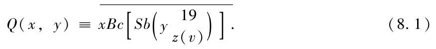
由于xBcy［根据（6），（5）］和Sb
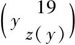
（根据定义17，31）是递归的，故Q（x，y）也是．根据命题Ⅴ和（Ⅷ）存在一个关系符号q（具有自由变量17，19）使得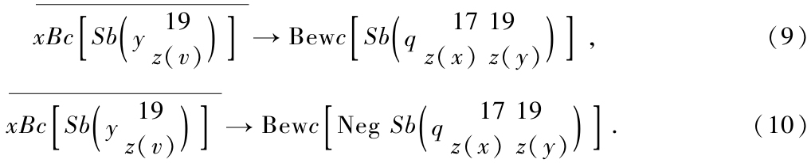
令
p=17Gen g （11）
（p是具有自由变量19的组符号）以及
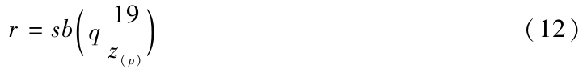
（r是具有自由变量17的递归组符号），[47]于是
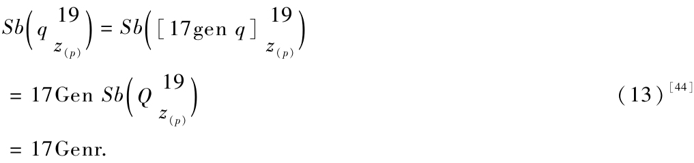
［因为（11）和（12）］.另外还有
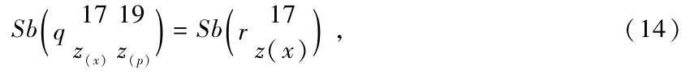
［根据（12）］．由于（13）和（14），如果我们在（9）和（10）中将y替换为p，则有
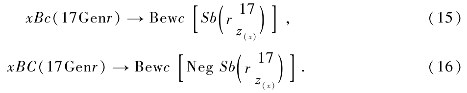
从而：
1.17Gen r不是c可证的．[48]因为倘若相反，就会有（根据6.1）一个n使得nBc（17Gen r）．
由（16）从而会有
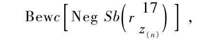
而另一方面，由17Genr的c可证性也会推出
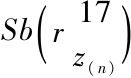
的可证性．因此c就会是相容的了（更不用说w相容了）．2．Neg（17Gen r）不是c可证的.证明：如上所证，17Genr不是c可证的，即（按照6.1）成立（n）nBc（17Cenr）．由此用（15）推出，（n）Bewc
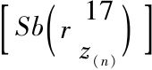
，它连同Bewc［Neg（17Genr）］就与c的w相容性矛盾．17Gen r因此在c中是不可判定的，故而命题VI得证．
人们容易使自己相信上面的证明是构造性的，[49]即下面以一种直观的无异议的方式所证明的：给出任一递归地定义的公式的类c：于是如果对于（有效可证的）命题公式17Genr给出了一个（c中的）形式判定，我们则可以有效地陈述：
1．对于Neg（17Genr）的一个证明．
2．对于任意给定的n，对
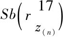
的一个证明，即17Cen r的一个形式判定会导致一个w相容性有效的可证明性．我们称一个自然数的关系（类）R（x1，…，xn）为可算的（calculable）［entscheidungdefinit］是说，如果有一个n位的关系符号r使得（3）和（4）成立（参看命题Ⅴ）．因此特别地，由命题Ⅴ，每个递归关系式可算的，相似地，称一个关系符号是可算的是说，如果它以这种方式指派给一个可算关系．那么对于具有w相容和可算的类c的不可判定命题的存在性而言这也足够了．对于是可算的这个性质从c可传递到xBcy［（参看（5），（6））和Q（x，y）］（参看8.1）并且也只有这些能应用到上面的证明中．在这种情形不可判定命题具有形式vGenr，其中r是可算的组符号（事实上，c应在在添加c而扩张的体系中是可算的就足够了）．
如果不是w相容，而仅仅是像对c所假定的那种相容性，的确，得到的不再是一个不可判定命题的存在性而是一个性质（r）的存在性了，但这个性质它可能既不能给出一个反例，也不能证明它对所有的数都成立．由于在证明17Gen r不是c可证的中，只有c的相容性被用到了，并且根据（15），从Bewc（17Gen r）得出对于每个数n，Sb
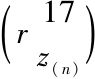
，是c可证的，从而Neg Sb对于任何数不是c可证的．将Neg（17Gen r）添加到c，我们得到一个相容的然而不是w相容的公式类c．c′是相容的，这是因为否则的话，17Genr就会是c可证的了，但c′不是w可证的，这是由于Bewc（17Genr）和（15）我们有（x）Sb的缘故，故而更有：
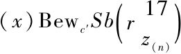
，而另一方面，自然有Bewc′［Neg（17Genr）］．[50]命题Ⅵ的一个特殊情形是，其中类c由有限个公式组成（不管有没有用提升型导出的那些公式）．每个有限的类α自然是递归的．设a是包含在α中的最大数．于是对c成立：
xεc～（Em，n）［m≤x＆n≤a＆nεx=mThn］．
c因而是递归的．这使我们可得出结论，例如，甚至在选择公理（所有类型的）或广义的连续统假定的帮助下，也不是所有的命题都是可判定的，在这里我们已假定了这些假设条件是w相容的．
在命题Ⅵ的证明中用到的体系P的性质仅仅是下面这些：
1．公理的类以及推理的规则（即关系“…的直接推诠”）是递归可定义的（这要基本符号以任意方式被置换成自然数）．
2．每一个递归关系在体系P中是可定义的（在命题Ⅴ的意义下）．
于是在每个满足假设1和2并且是w相容的形式体系中，不可判定命题以（x）l′（x）的形式存在，其中的F是一个自然数递归定义的性质，并且这种体系经由添加一个归纳可定义的w相容的公理类得到的每个扩张也都是如此，容易确认，满足假设1和2的体系包括有策梅洛-弗兰克尔以及冯·诺伊曼的集合论公理体系，[51]也包括了有佩亚诺公理，递归定义的运算［按照模式（2）］以及逻辑规则的数论公理体系．[52]一般说来，假设1其逻辑规则为普通的，而它的公理（像P的那样）为有限个格经替换导出的每个体系所满足．[53]
由命题Ⅵ我们现在能得到进一步的结果，为此给出以下定义：称一个关系（类）是算术的（arithmetical）是说，如果它可以单独地依靠概念+.［应用于自然数的加法和乘法］[54]以及逻辑常量∨，-，（x），=，其中的（x）和=仅仅与自然数相关联．[55]“算术命题”的概念以一种相应的方式定义，特别，关系“大于”以及“模……的同余”都是算术的，这是因为
x>y~（Ez）［y=x+z］，
z≡y（mod n）～（Ez）［x=y．n∨y=y=x+z．n］．
现在我们有
命题Ⅶ 每个递归关系是算术的．
我们以下面的形式证明该命题：形式x0=φ（x1，…，xn），其中φ为递归的，每个关系是算术的，并对φ的次数应用数学归纳法．设φ具次数s（s>1）．于是或者
1．φ（x1，…，xn）=p［χ1（x1，…，xn），χ2（x1，…，xn），…，χm（x1，…，xn）］[56]
（其中ρ即所有的χ具有的次数均小于s）或者
2．φ（0，x2，…，xn）=ψ（x2，…，xn），
φ（k+1，x2，…，xn）=μ［k，φ（k，x2，…，xn），x2，…，xn］
（其中ψ，μ的次数小于s）．
在第一种情形我们有：
x0=φ（x1，…，xn）～（Zy1，…，ym）［R（x0，y1，…，ym＆S1（y1，x1，…，xn）＆…＆Sm（ym，x1，…，xn）］，其中R和Si分别是算术关系，归纳假定它们存在且等价于x0ρ（y1，…，ym和yi=χ（x1，…，xn）．
因此这时x0=φ（x1，…，xn）是算术的．
在第二种情形我们应用如下步骤：关系x0=φ（x1，…，xn）可借助于“数的序列”（f）的概念[57]表达如下：
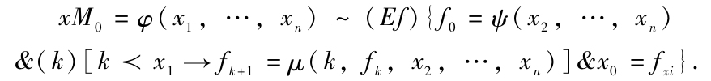
如果S（y，x2，…，xn）和T（z，x1，…，xn+1）分别为等价于
y=ψ（x2，…，xn，和z=μ（x1，…，xn+1）
的算术关系，而他们由归纳假定是存在的，于是成立下面的
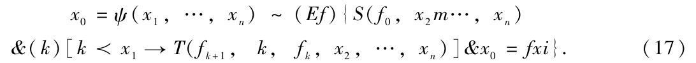
我们现在将概念“数的序列”置换为“一对数”，这只要指派数偶n，d给f（n，d）即可
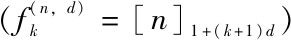
，其中［n］p表示n模p的最小非负剩余，于是我们有
引理1 如果f是任一自然数序列，k是任一自然数，则存在一对自然数n，d使得f（n，d）与f在前k项相同．
证明 设l是数k，f0，f1，…，fk-1中最大的数．设n由以下方式决定：
n=fi［mod（1+（i+1）l！）］，i=0，1，…，k-1，
这是可能的，因为数1+（i+1）l！，（i=0，1，…，k-1中的每两个都互素．对一个包含在这些数中两个的一个素数也就包含在差（i1-i2）l！中，从而因为|i1-i2|<l，它也就在l！中这是不可能的，因此数偶n，l！满足我们的要求．
由于关系x=［n］p，由x≡n（mod p）＆x<p定义，从而是算术的，且如下定义的关系P（x0，x1，…，xn）也是算术的：
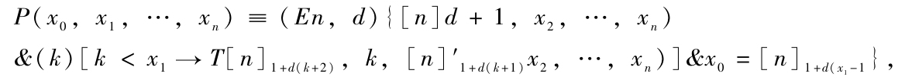
根据（17）及引理1，它等价于x0=φ（x1，…，xn）（我们设计序列f仅仅在直到第x1+1项前的过程中）．因而命题Ⅶ得证．
按照命题Ⅶ，对应于形如（x）F（x）（F为递归）的每个问题有一个等价的算术问题，并因为命题Ⅶ的整个证明都可以在体系P中被形式化（对每个特定的F），这个等价性在P中因而是可证明的．于是有
命题Ⅷ 在涉及命题Ⅵ中的形式体系里【53】都有不可判定的算术命题．
对于集合论公理体系及它的用w相容的递归公理类的扩张也成立相同的结果（借助于在第3节末尾的注解）．
我们最后也将证明下面的结果：
命题Ⅸ 在涉及命题Ⅵ中的所有形式体系里[58]存在限制谓词演算的不可判定问题[59]（即那些它们的普遍有效性和反例存在性均不能证明的限制谓词演算的公式）．[60]
它基于下面的
命题Ⅹ 每个形如（x）F（x）（F递归）的问题可以化为限制性谓词演算公式的可满足性问题（即对于每个递归F可以给出一个谓词演算公式，它的可满意性等价于（x）F（x）的有效性）．
我们将限制谓词演算（r.p.c.）看为由那样一些公式组成的，即有基本符号-，V（x），=；x，y，…（个体变量）以及F（x），G（x，y），H（x，y，z），…（性质和关系变量），[61]其中（x）及=只与个体相关，我们在这些符号上再添加了第三类变量φ（x），ψ（x，y），χ（x，y，z），…，它们代表了函数对象；就是说，φ（x），ψ（x，y）等表示单值函数，其变量和值都是个体．[62]称除了第一个提到的r.p.c．符号外，还包含了第三类的变量的公式为更广意义下（i.w.s.）的公式．[63]．“可满足的”和“普遍有效”这些概念立即可转移到i.w.s.的公式上，并且我们有命题说，对于每个i.w.s.的公式A我们可以给出一个r.p.c.的通常公式B.使得A的可满足性等等价于B的．我们从A得到B使用了以下的方法：用形如（ηz）F（zx），（ηz）G（z，xy），…置换出现在A中的第三类变量φ（x），ψ（x，y），…用消去PMI*14的文字中的“描述性的”函功能，并用逻辑地乘以[64]所得到的结果，而该结果陈述的是所有由φ，ψ，…替换的F，G，…关于第一个空位是严格单值的．
我们现在证明，对于形如（x）F（x）（F为递归的）的每个问题有一个等价的涉及一个i.w.s.公式的可满足性，由此命题X以一种刚说过的那些相一致方式得到．
由于F是递归的，故有一个递归函数Φ（x），使得F（x）～［Φ（x）=0］，并且对于Φ有一个序列Φ1，Φ2，…，Φn，使得Φn=Φ，Φ1（x）=x+1.而对于每个Φk（1<k≤n），或者
1．
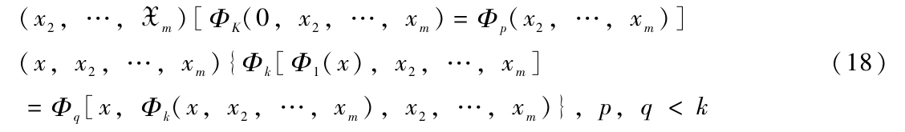
或者
2．
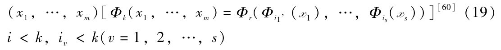
或者
3．
（x1，…，xm）［Φk（x1，…，xm）=Φ1，…Φ1（0））］.（20）
除此之外，我们形成了命题
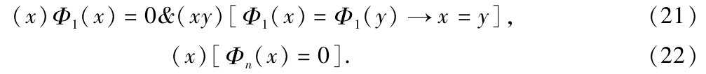
在所有的公式（18），（19）．（20）（对于k=2，3，…，n）中，以及在（21），（22）中，我们现在用函数变量φi置换函数Φi，用其余一个未出现的个体变量x0置换数0并形成如此得到的公式的合取C．
公式（Ex0）C于是有所需要的性质，即
1．如果（x）［Φ（x）=0］是这种情形，则（Ex0）C是可满足的，这是因为当函数Φ1，Φ2，…，Φn在（Ex0）C被φ1，φ2，…，φn置换，他们显然产生了正确的命题．
2．如果（Ex0）C为可满足的，则（x）［Φ（x）=0］即如此．
证明 设Ψ1，Ψ2，…，Ψn为那些假定存在的函数，使得当将它们在（Ex0）C中替换为φ1，φ2，…，φn时产生正确的命题．设他的个体的范围为I．由于（Ex0）C对于所有函数Ψi的正确性，于是有一个个体a（在I内）使得所有从（18）到（22）的公式在将φ置换为Ψi，0置换为a时变换成正确的公式（18′）到（22′）．我们现在构建一个I的最小子类，使得它包含a并在关于运算Ψ1（x）下封闭．这个子类（I′）具有性质：函数Ψi中的每一个当被用于I′的元素时仍旧产生出I′的元素．这是由于I′的定义对Ψ1成立；由于（18′），（19′），（20′），这个性质从Ψi中的低指标传到高指标．从Φi用到I′的个体范围的限制导出的函数记为Ψ′i，对于这些函数公式（18）到（22）依然全都成立（再讲0置换为a，Φ置换为Ψ′i）．
由于（21）对于Ψ′i和a的正确性，我们可以将I′的个体以1-1对应的方式映射到自然数中，而以这样的方式它将a变换为0，而函数Ψ′1变换成后继函数Φ1，但是，在此映射下，所有的函数Ψ′i变换成了Φi，又由于（22）对于Ψ′n和a的正确性，我们得到（x）［Φn（x）=0］或者（x）［Φ（x）=0］，它已被证明过了．[65]
由于引向命题X的思考（对于每个特定的F）也可以在体系P中复述，故在一个形如（x）F（x）（F是递归的）的命题与对应的r.p.c.公式之间的可满足性之间的等价性便是在P中可证明的，从而在命题Ⅸ已证明了的那里推出的这个r.p.c.的不可判定性也就是可证明的了．[66]
由第2节的结论得到一个有关体系P（及其拓展）的一个相容性的突出结果，它可表达成如下的命题；
命题Ⅺ 如果c是一个已知的公式的递归的相容类[67]．则陈述c是相容的这个命题公式不是c可证的：特别，P的相容性在P中是不可证明的，[68]这里假定了P是相容的（若非如此，当然每个陈述都是可证明的）．
证明如下（概要）：设c为任一给出的公式的递归类，这是对于我们的目的选出的并一经选出就加以固定的类（最简单的情形是空类）．为了证明17Gen r不是c可证的，[69]就像在第2节公式（16）下面的1中那样，只有c的相容性被用到，即
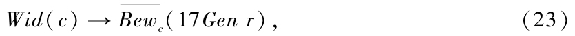
即由（6.1）
由（13），17Cen r=
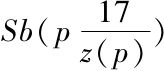
从而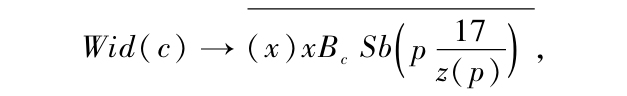
即由（8.1）
Wid（c）→（x）Q（x，p）. （24）
我们现在要建立如下论断：所有在第2节[70]和第4节定义的概念（或证明了的断言）也是在P中可表达的（或可证明的）．由于我们通篇只用了正规的定义方法和经典数学所能接受的证明，他们都可在体系P被北形式化．特别是c（所有递归类均如此）在P中可定义．设w为在P中表达了Wid（c）的命题公式．关系Q（x，y）按照（8.1），（9）及（10）由关系符号q表达．从而Q（x，p）由r表达因为由（12），r=
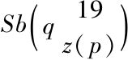
，而命题（x）Q（x，p）则有17Gen r表达．由于（24），wlmp（17Gen r）因而是在P中可证的[71]（更不用说是c可证的了）．现在，如果w是c可证的，那么17Gen r就会也是c可证的从而由（23）推出c不是相容的．
可以注意一下：这个证明是构造性的，即如果一个对于w的证明是由c产生的，则它允许由一个由c的归谬有效导出．命题Ⅺ的整个证明也可以逐字逐句地带到集合论的公理体系M上，也可带到经典的数学A上，[72]而且在此它还产生这样的结果，即对于M或者A没有相容的证明可以各自在M或A中被形式化，这自然是在假定M和A是相容的条件下．必须清楚地注意到，命题Ⅺ（以及对子M和A的相应结果）代表与希尔伯特的形式主义观点没有矛盾．这是因为这个观点预先只假定了一个由有限手段影响的一个相容证明的存在性，并且使人相信或许有有限的证明不能在P中陈述（或在M，或在A中）．
因为对于每个相容类c，w不是c可证的，故总有（由c）不能判定的命题，即只要Neg（w）不是c可证的，w便是不可判定的；换句话说，人们可以在命题Ⅵ中置换w相容性的假定为：陈述句“c是不相容的”不是c可证的．（注意，存在相容的c，对于它这个陈述是c可证的．）
本文通篇我们几乎将自己局限于体系P，而仅仅简单地提及到对于其他体系的应用．这些结果将在随后的文章中以更完全的一般形式加以叙述和证明，我们在此只给出了证明概要的命题Ⅺ也将在那里得到详细论述．
（1930，9，17收到）
（胥鸣伟 译[73]）
[1]参看该工作的结果的摘要，发表在Anzeige der Akad．d．Wiss（math-naturw K1），1930，No．19．
[2]A.Whitehead及B．Russell，Principia Mathematica，第二版，Cambridge 1925．特别地，我们把无限性公理（其形式为：存在有可数多个个体），可约性公理以及选择公理（所有类型的）都算进到PM的公理之中．
[3]A.Frankel．‘Zehn Vorlesungen über die Grundlegung der Mengenlehre’，Wissensch．u Hyp．，Vol.XXXI；v.Neumann，‘Die Axiomatisirung der Mengenlehre’．Math Zeitschr.27，1928，journ.f.reine u angew Math 154（1925），160（1929）．我们或许可注意到，为了完成这个形式化，这些公理以及逻辑演算的推理规则必须要添加到前面所提及那些文章中去．这些注解也应用到了近年来由D.xierbote和他的同事们提出的体系上（就已经发表了的而言）．参看D，Hilbert，Math Ann 88，Abh aus d math，Semder Univ.Hamburg Ⅰ（1922），VI（1928）．P.Bernnays，Math Ann 90；J.v.Neumann，Math.Zeitschr.26（1927）；W.Ackermann.Math Ann 93．
[4]更准确地说，存在有不可判定命题，在其中除了逻辑常数：-（非），v（或），（x）（对所有的），以及=（恒等于）之外，再没有超出+（加）和．（乘）的其他概念，后面这两个也都指的是自然数，而前缀（x）也只只涉及自然数．
[5]在此背景下，只有这样的PM中的公理可以算作是独立的，不是由相互改变类型而产生的．
[6]由此之后，我们理解“PM的公式”总认为是一个没有缩写的公式（即没有使用定义的）．定义仅仅用作精简所写的文本，从而原则上说，是多余的．
[7]即我们将基本符号1-1地映射到自然数上．
[8]即包含了由自然数构成的数序列的一个截断（事实上，数不能被排列成一个空间序）．
[9]换句话说，以上所描述的步骤给出了PM体系在算术领域中的一个同构像，从而所有的数学论证可以同等有效地在这个同构像中进行．这出现在以下概述的证明中，即“公式”，“命题”，“变量”等总被理解为该同构像的相应对象．
[10]实际上写出这个公式会非常简单（但相当花精力）．
[11]或许按照它们的项的和的大小排序，而相等时则按字母式排序．
[12]符号-表示否定．
[13]实际上写出公式S还是没有一点难度．
[14]注意：“［R（q）；q］”（或者一样的“［S；q］”）仅仅是这个不可判定性命题的数学描述，但是一旦人们确定公式S，那么自然也就可以决定数q了，从而有效地写出这个不可判定命题自身．
[15]每个认识论的悖论同样可用作一个相似的不可判定性证明．
[16]不管表面看起来怎样，对于这样一个命题并不存在任何循环推断，这是因为它的起点是断言一个完全确定的公式（即在一个有确定替换并按字母式排序中的第n个）的不可证明性，而且只是到后来（有些偶然的成分）才显现出该命题自己是被这个公式准确地表达出来的这个事实．
[17]对佩亚诺公理系的添加就像在PM体系中所做的所有其他变化一样，只是为了简化证明，原则上是可以被摒弃的．
[18]假定了可使用可数多个符号的的变量型．
[19]非齐性关系也可按这样的意义定义，譬如，在个体与类之间的如下形式的关系：（（x2），（x1），（x2））．一个简单的思考表明，关于PM中关系的所有可证明命题也都是按这种方式可证明的．
[20]因此如果x在a中不出现或者不是作为自由的出现，x∏（a）也是一个公式．在那种情形下x∏（a）自然意味着与a相同．
[21]有关这个定义（以及以后将出现的类似于它的定义），可参看J．Lukasiewicz和A．Tarski的‘Untersuchungen über den Aussagenkalkül’，Comptes Rendus des séances de la Société des Scienceset des Lettres de Varsovie XXIII，1930，Cl.III．
[22]其中的v在a中不以自由变量出现时，我们必须令Subst
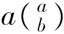
=a．注意：“Subst”是一个属于元数学的符号．[23]在PMI中，*13，x1=y1被想成是如同x2∏（x2（x1）⊃x2（y1））所定义一样（对于较高类型是相似的）．
[24]要由所提出的（三段论法的）格（schemata）（并进行了可允许替换后的情形Ⅱ，Ⅲ和Ⅳ）得到这些公理，因此仍需
1．消去简略记号，
2．添加抑制性括号．
注意，所得到的结果必定是上面所说意义下的“公式”．
[25]因此c或为一个变量，或为0，或为1，或为f形式的符号或者fu，其中u或为0或为关于“在a中一个位置上自由（约束）”这个概念的第1型变量．参看在脚注24所引著作的§1 A5．
[26]这里替换规则是多余的，这是因为我们已经处理了在这些公理自身中的所有可能的替换（就像在J．冯·诺伊曼的‘Zur Hilbertschen Beweistheorie’，Math．Zeitschr．26，（1927）中那样）．
[27]即它的定义领域是非负整数类（或这样的n一数组），同时它的值也为非负整数．
[28]此后，小的斜体字母（不管是否有指标）总是非负整数变量（如果没有相反地陈述表达）．
[29]更准确的，经由在前面空位中一些前述函数的替换，即φk（x1，x2）=φp［xq（x1，x2），φr（x2）］（p，q，rk）．并不是所有左端中的变量都必定会出现在右端（对递归模式（2）也相似）．
[30]我们把关系中的类（1-位关系）也包括在内．递归关系R自然具有性质：对于每个特定的数的n元组可以判定R（x1，…，xn）是否成立．
[31]对于涉及内容的（更特别地也是一类数学的）的所有描述，使用了希尔伯特符号系统（Hilbertiansymbolism），参看Hilbert-Ackermann，Grundzüge der theoretischen Logik，Berlin 1928．
[32]我们用哥特体字母X，y作为所给变量的n元组，譬如x1，x2，…，xn，的简略表示．
[33]我们认定函数x+y（加）和x·y（乘）是递归的．
[34]a不能取0和1以外的值，由α的定义这是显见的．
[35]所用符号≡的意思是“由定义等价”，因而它在定义中行使的功能或为=或为～（不同于在希尔伯特的符号体系中的）．
[36]在以下定义中只要出现符号（x），（Ex），εx的地方，它总跟随着一个对x值的限制，这个限制仅仅起着保证所定义概念的递归性（参看命题Ⅳ）．另一方面，所定义概念的范围几乎总不会受到它被省略的影响．
[37]对0<n≤z，其中z是除尽x的不同素数的个数，注意，对n=z+1，nPrx=0．
[38]m，n≤x对于m≤x＆n≤z成立（对于多余两个变量的情形类似）．
[39]限制n≤（Pr［l（x）］2）x［l（x）］2的意思大体上是：属于x的公式序列的最短长度最多可等于x的构成公式的个数．但是存在有最多l（x）个长度为1的构成公式最多l（x）-1个长度为2的，等等，因此总体上，最多
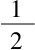
［l（x）{l（x）+1）］≤［l（x）］2．n中的素数因而可以全都假定为小于Pr{l（x）］2）}，它们的个数≤［l（x）］2且它们的幂指数（它们为x的构成公式）≤x．[40]其中若v不是一个变量，x也不是一个公式，则
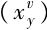
=x．[41]替代
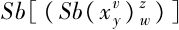
我们写为：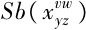
（对于多于两个变量的情形类似）．[42]变量u1，…，un可以任意分配，譬如，总有一个具有自由变量17，19，23，…，等的r，使得（3）和（4）对他们成立．
[43]命题Ⅴ自然是基于这样的事实，即任意递归关系R，对于每个数的n元组，从体系P的公理看不管关系R是否成立，它都是可判定的．
[44]由此立即可得出它对于每个递归关系均成立，这是因为任何这样的关系等价于0=φ（x1，…，xn），其中φ为递归的．
[45]在此证明的准确叙述中，r是被自然定义的，用了纯粹形式的构造而不是以一种概述其内容的迂回方法．
[46]因此它按照其内包表达了这个关系的存在性．
[47]事实上，r是由递归关系符号q经由一个确定的数（p）置换了一个变量导出的．
[48]c可证的意味着：xεFlg（c），由（7），它陈述的同于Bewc（x）的．
[49]因为所有出现在证明中的存在性断言都建立在命题Ⅴ的基础之上的，而它可容易看出，从直观上说是无异议的．
[50]因此这种既相容又不w相容的c的存在性，一般说来，只有在假定了c的相容性后（即P是相容的）才被证明．
[51]假设1的证明在这里甚至比对体系P更简单，这是因为一类基本变量（或者对冯·诺伊曼的两类）．
[52]参看希尔伯特的演讲“Probleme der Grundlegung der Mathematik”的问题Ⅲ，math，Ann．102．
[53]加在所有数学形式体系的不完全性的真正源头被发现（将在这文章的第Ⅱ部分指明）在于这样的事实，即持续高阶类型的形成可以延拓到超限（参看希尔伯特的“Über das Unendliche”，Math．Ann．95，因而在每个形式体系最多出现可数多个类型．可以证明，这里提及的不可判定命题总可经添加适当高阶类型成为可判定的（例如对体系P添加w类型）．相似的结果也对集合论公理体系成立．
[54]从此之后，零总被包含在自然数之内．
[55]这样一个概念的定义因而必定构造性的，它单独地依靠了所陈述过的符号，自然数的变量x；y，以及符号0和1（函数及集合变量必不出现）（任意其他的数-变量自然可出现在x位置的前缀中）．
[56]当然不必所有x1，…，xn实际上都出现在xi中（参看脚注27中的例子）．
[57]在这里f表示一个变量，其值域有自然数序列组成．fk代表序列f的第k+1个项（f0为首项）．
[58]这是些从P用添加一个递归可定义的公理类导出的w相容体系．
[59]参看Hilbert-Ackermann，Grundzüge der theoretischen Logik.在P体系中，限制谓词演算被认定为那些从PM的限制谓词演算用较高类型置换导出的公式．
[60]在我的论文“Die Vollst adigkeit der Axiome des logischen Funktionkalküls”，Monatsh f Math u Phys XXX VⅡ，2中，我已证明了每个限制谓词演算的公式它或者作为普遍成立而可证，否则就存在一个反例；但是根据命题Ⅸ，这个反例的存在性不再总是可证的（在这里所考虑的形式体系中）．
[61]在上面引述的Hilbert和Ackermann的文章中没有将符号=包括在谓词演算中，但是对于=出现的每个公式中，存在一个没有这个符号的公式，它与原来的那个同时是可满足的（参看在脚注55众所引述的文章）．
[62]自然它们的定义域为全部个体．
[63]第三类变量因而可以出现在所有的空位置上而不是个体变量的位置，例如，y=φ（x），F（x，φ（x）），；G［ψ（x，φ（y）），x］等．
[64]逻辑积，即形成合取．
[65]由命题Ⅹ得到，例如，如果人们解决了对于r.p.c.的判定性问题，那么费马及哥德巴赫问题就是可解的．
[66]命题Ⅸ对于集合论的公理体系以及用可证明的w相容的公理体系所做的拓展自然地也都成立．
[67]c是相容的（简记为Wid（c））定义如下：Wid（c）=（Ex）{Form（x）＆Bew（x）}．
[68]如果c被公式的空类置换则就得到断言．
[69]自然依赖于c（正如p那样）．
[70]从“递归”的定义直到命题Ⅵ（包括它）前．
[71]可以由（23）导出的wlmp（17Genr）的正确性直接建立在以下事实上：不可判定性命题17Gen r断言了它自己的不可判定性，这是我们一开始就说到的．
[72]参看J.von Neumann，“Zur Hilbertschen Beweistheorie”，Math.Zeitschr.26，1927．
[73]本篇是根据哥德尔论文的英译本翻译的，该英译本属于Bernnade Meltzer，是这篇论文的的第一件正式译文，发表于1963年．曾被指出有若干不足之处．